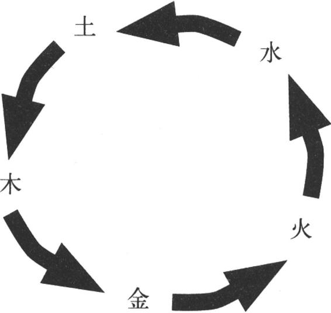
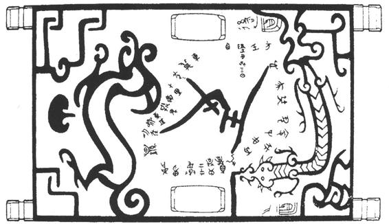
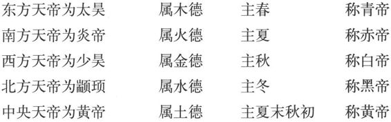

阴阳五行并不神秘。它们的产生正是古人对现实生活、生产经验的概括和总结。远古时代，人们每天必然经历两种情况：早晨一觉醒来，太阳升起，一片光明；到了傍晚，日落西山，天空黑暗下来，成了黑夜。每天如此，日复一日，年复一年。经过千百万年，人们的思维认识有了提高，对于这两种截然相反的自然现象给予概括，便用“阴”和“阳”这两个概念来表达。可见，阴阳观念正是客观存在的自然现象在古人头脑中的反映，是古人对白天、黑夜两种相反现象的概括，体现了古人朴素的唯物认识。后来，人们对“阳和阴”的含义又给予引申和丰富，使它们逐渐具有“天和地”、“男和女”、“君和臣”、“父和子”、“夫和妻”等等含义。
“五行”是指水、火、木、金、土五种物质。“五行”概念的产生，是古人在探索天地万物是由什么构成的过程中形成的。这里首先认为天地万物都是物质的，然后进一步说明是由水、火、木、金、土五种物质构成的。尽管这个说法在今天看来很不准确，但是它也反映了古人在这里完全抛弃了鬼神观念，从朴素的唯物观出发，对客观存在的万物作出的概括和总结。这在当时来说，有巨大的进步意义。世界上一些具有古老文明的民族都曾经探索过万物的构成。古印度就曾经提出世界是由水、土、火、风四种物质构成的。中国古代的《管子》干脆认为构成万物的最基本物质就是水。“五行”说只是其中的一种观点，但是它对中国传统文化的影响是巨大而又深远的。最早提出“五行”说的是《尚书·洪范》。它说：
五行：一曰水，二曰火，三曰木，四曰金，五曰土。水曰润下，火曰炎上，木曰曲直，金曰从革（制作兵器。或说，金属兵器可引发社会变革），土爰（引出）稼穑。润下作咸，炎上作苦，曲直作酸，从革作辛，稼穑作甘。
这里不仅提到构成万物的五种基本物质，而且还介绍了它们所具有的特点以及与之相联系的五种味道。后来，思想家们进一步探索这五行之间的关系，提出了“五行相生”和“五行相克”的思想。
所谓五行相生，是指：木生火、火生土、土生金、金生水、水生木。
这并不难理解。木生火，这是尽人皆知的常识。火燃烧以后会留下灰烬，就是所谓的土。金属矿藏大多埋在地下，所以说土生金。对于金生水，古人通常解释为：用金属制作的工具更容易掘土挖井而得到水（或说，潮湿环境下，金属表面可产生水珠）。所有的植物生长时都需要水，所以说水生木。
克是“战胜”的意思。“五行相克”，是说五行中的某一行可以战胜另一行。它们是：木克土、金克木、火克金、水克火、土克水。
这些也不难理解，都是从生活经验中得来的。植物种子最初埋在地下，当它发芽生长时就会冲破土地钻出地面，意味着木战胜了土。用金属工具可以更锋利地削砍植物，是金克木。金属矿石虽然十分坚硬，一旦在火上高温加热，便会熔为液态，这便是火克金。水能灭火，这是水克火。堆土可以挡住水流，就是土克水。
到此为止，这五行相生、相克，都是古人在现实生活、生产中获得的直观经验，既不神秘，也不唯心。
到了战国时期，一些思想家对于自古流传下来的阴阳五行观念进行了唯心主义改造，使之有了新的发展。邹衍就是这方面的代表人物。邹衍是齐国人，他提出“五德终始”学说，以此来解释人类社会的演变规律，在当时取得了轰动效果。司马迁在《史记·孟子荀卿列传》中提到邹衍时说：“乃深观阴阳消息，而作怪迂之变（辩）。”意思是邹衍能深刻观察事物的阴阳变化信息，然后发表一些超乎一般生活情理的怪异言论。邹衍喜欢对宇宙万物展开宏观上的论述，他认为人类社会的发展演变符合“五行相克”规律。他把推动社会发展的动力称为“德”。这种动力可以分别用水、火、木、金、土表示五种力量，即是五德。社会的发展变化、王朝的兴替就是依照五行相克的次序，循环往复、终而复始进行的。具体过程如图：

邹衍的著作没能流传下来，我们不能直接看到他的论述，但是古代有些历史文献对他的学说有所介绍，足可供我们参考。例如《吕氏春秋·应同》便把这一社会演变规律具体化。文中说：
凡帝王者之将兴也，天必先见祥乎下民。黄帝之时，天先见大螾大蝼。黄帝曰：土气胜。土气胜，故其色尚黄，其事则土。及禹之时，天先见草木秋冬不杀。禹曰：木气胜。木气胜，故其色尚青，其事则木。及汤之时，天先见金刃生于水。汤曰：金气胜。金气胜，故其色尚白，其事则金。及文王之时，天先见火，赤乌衔丹书集于周社。文王曰：火气胜。火气胜，故其色尚赤，其事则火。代火者必将水，天且先见水气胜。水气胜，故其色尚黑，其事则水。水气至而不知数，备将徙于土。
大意是：一个新的帝王兴起时，上天必定先在民间表现出一些征兆来。黄帝统治天下的时候，上天让生活在泥土中的大蚯蚓和大蝼蛄出现。黄帝说，这表明“土”的力量强盛。因为“土”的力量大，表现在颜色上就是黄色盛行，任何事物都和“土”有联系。到了禹的时候，上天使草木在秋冬季节不凋零。禹说，这是“木”的力量强盛。因为“木”的力量大，就盛行青色，任何事物都和“木”有联系。到了汤的时候，上天先表现出从河里捞出了兵器。汤说，这是“金”的力量强盛。因为“金”的力量大，就盛行白色，任何事物都和“金”有联系。到了周文王的时候，上天先表现在火的方面，一些红色的乌鸦口衔着书写红色文字的东西、落在周人的祭坛上。文王说：这是“火”的力量强盛。因为火的力量大，就盛行红色，任何事物都和“火”有联系。将来代替火的，一定是水，上天先要表现出“水”的力量强盛。“水”的力量强大，就会盛行黑色，任何事物都会和“水”有联系。“水”的强盛什么时候实现，不知道有多久，最终还是要转移到“土”的力量上。上面所述，在我们面前呈现出一幅王朝兴替的运行轨迹：
远古黄帝（土德）→夏朝（木德）→商朝（金德）→周朝（火德）→？朝（水德）。
谁来取代周王朝呢？春秋战国时期，旧的奴隶制度正在崩溃，新兴的地主阶级力争取代奴隶主贵族的统治，各个诸侯国之间不断发生强胜弱、大吞小的战争，几个大国国君政治野心膨胀，无时无刻都想对周天子取而代之。这时邹衍的“五德终始”理论正好适应了野心家们的需要，为他们取代周天子的统治提供了理论依据，因此他们都对邹衍表示热烈欢迎。司马迁在《史记·孟子荀卿列传》中介绍说，邹衍在齐国受到齐王的敬重。到了魏国，魏王亲自到郊外去迎接，把它当做贵宾接待。到了赵国，当权的平原君不敢和他并行，落座时把自己的席子撤去、直接坐在土地上，表示屈尊于下。到燕国的时候，燕昭王不仅亲自迎接，而且怀抱扫帚走在前面以示开道，还把邹衍尊为老师，自己作为学生躬听教导；又专门为邹衍建造碣石宫居住、讲学，燕昭王则亲自前往受教。凡此等等，都是“五德终始”学说引发出来的结果。后来，秦始皇统一中国后，便确定秦王朝属水德，以示战胜了周朝的火德，并且改革历法、官服、制度等等，使之符合水德的特征。
诚然，邹衍宣扬的“五德终始”理论是历史循环论，是唯心主义的。但是我们也应该看到，以邹衍为代表的这一学派，已经把“五行”从具体的物质概念提升为抽象的属性概念了，这反映了思想家们思维能力的提高。他们是以一种积极的态度去探索人类社会的演变规律，以宏观的思维模式来探求人类社会与自然之间的内在联系，与那些鼓吹神灵主宰人类命运的思维方式相比，邹衍的“五德终始”学说是积极的、进步的，对丰富中华文化中的“天人合一”思想作出了巨大贡献。（图9—12）

图9-12 湖北随州曾侯乙墓出土漆箱上的天文图
对于邹衍的“五德终始”学说，英国学者李约瑟在其《中国科学技术史》中给予了高度的评价。他说：
当希腊人和印度人发展机械原子论的时候，中国人则发展了有机宇宙的哲学。在这些方面，“西方”是初等的，而中国是高深的。［14］
长期以来，阴阳五行被江湖骗子们利用来行骗，他们故弄玄虚，或炫耀神秘，给人算卦相面、占卜驱邪等等，确属封建迷信活动。我们应该把那些糟粕从古代的文化遗产中剔除出去，予以坚决抛弃。与此同时，我们也应该重视古代“阴阳五行”学说的学术价值。由于阴阳五行学说自古以来在中华民族的医药、建筑、天文、历法、军事、武术、艺术等等许多领域都有着广泛的运用，与中华传统文化的发展有着密不可分的联系，因此对于这一非物质文化遗产，我们应该更深入地进行研究。
秦始皇统一中国以后，为了证明政治的合法性，利用“五德终始”观点说明秦朝代替周朝的必然性，由此秦朝应当属于水德。为了与水德相照应，一切制度也要作出相应的改变。《史记·秦始皇本纪》说：
始皇推终始五德之传，以为周得火德，秦代周德，从所不胜。方今水德之始，改年始，朝贺皆自十月朔。衣服旄旌节旗皆上黑。数以六为纪，符、法冠皆六寸，而舆六尺。六尺为步，乘六马。更名河曰德水。以为水德之始。
于是秦更命河曰德水，以冬十月为年首，色上黑，度以六为名，音上大吕，事统上法。
秦始皇改变历法，把过去的十月定为每年的开始；一切官服、军服都为黑色；一切度、量、衡都以六数为单位；以大吕定音调。还把黄河改称为“德水”。但是，这一切并没能挽救秦朝很快就覆灭的命运。
春秋战国时期，随着阴阳五行学说的发展，在神道观念方面产生了“五方五帝”的观念，即认为在天上也有五个天帝各自统辖一方。这是人世间诸侯国各据一方的分裂现实影响了人们的神道认识，于是就有五帝在天上各辖一方的思想。据《吕氏春秋》十二纪所说，它们是：

在古代的历史文献中，常常有关于五帝与历史人物、事件相附会的记载，反映的就是上述观念。到了西汉时期，由于统一的封建帝国日益强大，封建皇帝的专制统治得到巩固，在汉武帝时，五帝之上又出现了地位最高的太一神。这同样是大一统的社会现实在人们头脑中的反映。